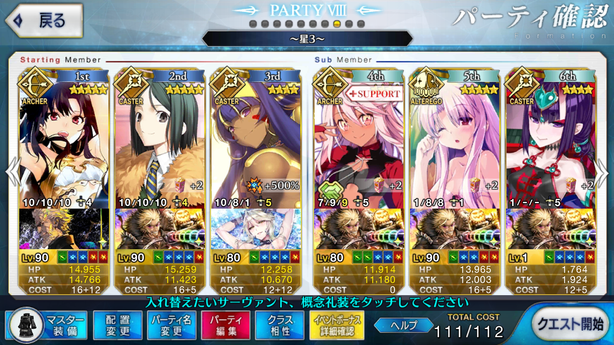
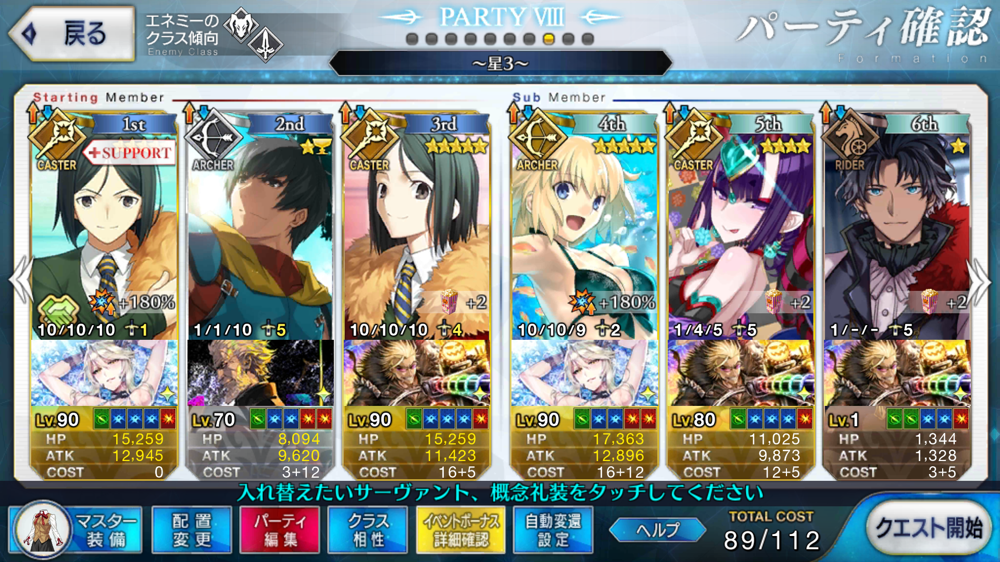

【FGO】神秘の国のＯＮＩＬＡＮＤ!! ～鬼の王とカムイの黄金～ フードコート
この記事ではFGOイベントの周回を扱います。
編成画像にて最終再臨絵のネタバレがあるのでご注意を
基本方針
- 3T周回する
- 可能な限りドロップ追加礼装を搭載する
ドロップアイテム
- 巨人の指輪
- 枯淡勾玉
- ドクロコーン
エネミー構成
- パンプキンナイトJ
- 緑かぼMARU（2w）
- 母があげいもを作りましたよ（3w）
パンプキンナイトJは黒武者
緑かぼMARUは鬼ヶ島などで登場した＊＊丸（緑の鬼）
母があげいもを作りましたよ は狂頼光
天地人相性
相性有利の場合、与ダメージ+10％
相性不利の場合、与ダメージ-10％
| 敵 | 天地人 |
|---|---|
| パンプキンナイトJ | 天 |
| 緑かぼMARU | 地 |
| 母があげいもを作りましたよ | 天 |
特にHPが高いのは緑かぼMARUと母があげいもを作りましたよなので、2wは天属性、3wは人属性だとダメージが伸びやすい
編成例
特攻倍率500

凸カレイシュタル、孔明、ロイヤルニトクリス
イシュタルで1～2wを飛ばし、ロイヤルニトクリスで3wを片付ける
マスター礼装の攻撃力バフは2wで切る
イシュタルの火力は自前のスキルのみでは足らず、ニトクリスは宝具レベルとロイヤルアイシングのおかげでイシュタルと孔明のバフだけでも3wを削り切れる
凸足柄ブラザーズはフレ含め4枚なので、ドクロコーン＋８
ロイヤルアイシング＋シトナイ＋護法少女でオトモダチポイント＋90％（凸ロイヤルなら＋120％）＋フレ分
特攻倍率180

アーラシュ、W孔明、ロイヤル水着ジャンヌ
1wはいつものステラ
ロイヤル水着ジャンヌで宝具を2連打する
水着ジャンヌは自前のArtsバフとマスター礼装のNP獲得量アップを載せて、2wを超えた後で68程度リチャージする
最低60のリチャージがあれば、スキルで100まで持っていける
周回用キャラ選別
アーラシュ
いつもの
1wと言えど相手のHPが多いONILANDだが、幸いにして敵がセイバークラスなので打ち漏らす心配はない
イシュタル
NP＋50の全体宝具アーチャー
同様の条件を持つニコラ・テスラも有力だが、イシュタルは味方全体に攻撃力バフをかけられるところが強み
ニトクリス
いつもの周回キャスター
自前でNPを100獲得できる全体宝具持ちは彼女だけで、今回の500％まで上がる特攻倍率との噛み合い方も凄まじい
フレロイヤルニトクリスがいれば、凸カレ子ギル＋ニトクリス＋ニトクリスで高速周回も可能
子ギル
凸カレとフレニトクリス前提
攻撃力バフのカリスマもレベルが上がっていると良い
水着ジャンヌ
ArtsバフとNP+40を持った全体宝具アーチャー
Artsのためパーツさえ揃っていれば水着ジャンヌシステムが可能
パラケルスス等のパーツが育っていなかったり嫁ネロや玉藻がいない場合でも、2回の連打ならW孔明で行ける